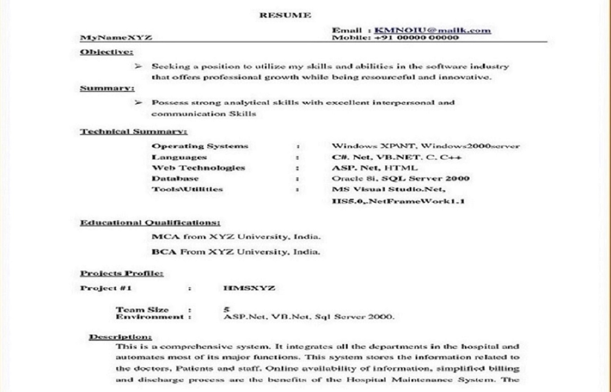

Bachelor of Computer Applications
Bachelor of Computer Applications (B. C. A.) is an undergraduate Programme to start career in computer science. It provides sound academic base from which an advanced career in computer applications including the latest developments keeping pace with the industry can be developed.

Bachelor in Computer Information Systems
A curriculum vitae(often shortened CV or vita) is a written overview of a person's experience and other qualifications for a job opportunity. It is akin to a résumé in North America. In some countries, a CV is typically the first item that a potential employer encounters regarding the job seeker and is typically used to screen applicants, often followed by an interview. CVs may also be requested for applicants to postsecondary programs, scholarships, grants and bursaries. In the 2010s, some applicants provide an electronic text of their CV to employers using email, an online employment website or using a job-oriented social networking service' website, such as LinkedIn.

Bachelor in Business Management
A curriculum vitae(often shortened CV or vita) is a written overview of a person's experience and other qualifications for a job opportunity. It is akin to a résumé in North America. In some countries, a CV is typically the first item that a potential employer encounters regarding the job seeker and is typically used to screen applicants, often followed by an interview. CVs may also be requested for applicants to postsecondary programs, scholarships, grants and bursaries. In the 2010s, some applicants provide an electronic text of their CV to employers using email, an online employment website or using a job-oriented social networking service' website, such as LinkedIn.

Bachelors in Hotel Management
A curriculum vitae(often shortened CV or vita) is a written overview of a person's experience and other qualifications for a job opportunity. It is akin to a résumé in North America. In some countries, a CV is typically the first item that a potential employer encounters regarding the job seeker and is typically used to screen applicants, often followed by an interview. CVs may also be requested for applicants to postsecondary programs, scholarships, grants and bursaries. In the 2010s, some applicants provide an electronic text of their CV to employers using email, an online employment website or using a job-oriented social networking service' website, such as LinkedIn.

Masters in Computer Applications
A curriculum vitae(often shortened CV or vita) is a written overview of a person's experience and other qualifications for a job opportunity. It is akin to a résumé in North America. In some countries, a CV is typically the first item that a potential employer encounters regarding the job seeker and is typically used to screen applicants, often followed by an interview. CVs may also be requested for applicants to postsecondary programs, scholarships, grants and bursaries. In the 2010s, some applicants provide an electronic text of their CV to employers using email, an online employment website or using a job-oriented social networking service' website, such as LinkedIn.
Masters in Computer Information Systems
A curriculum vitae(often shortened CV or vita) is a written overview of a person's experience and other qualifications for a job opportunity. It is akin to a résumé in North America. In some countries, a CV is typically the first item that a potential employer encounters regarding the job seeker and is typically used to screen applicants, often followed by an interview. CVs may also be requested for applicants to postsecondary programs, scholarships, grants and bursaries. In the 2010s, some applicants provide an electronic text of their CV to employers using email, an online employment website or using a job-oriented social networking service' website, such as LinkedIn.

Masters in Business Management
A curriculum vitae(often shortened CV or vita) is a written overview of a person's experience and other qualifications for a job opportunity. It is akin to a résumé in North America. In some countries, a CV is typically the first item that a potential employer encounters regarding the job seeker and is typically used to screen applicants, often followed by an interview. CVs may also be requested for applicants to postsecondary programs, scholarships, grants and bursaries. In the 2010s, some applicants provide an electronic text of their CV to employers using email, an online employment website or using a job-oriented social networking service' website, such as LinkedIn.

c in Hotel Management
A curriculum vitae(often shortened CV or vita) is a written overview of a person's experience and other qualifications for a job opportunity. It is akin to a résumé in North America. In some countries, a CV is typically the first item that a potential employer encounters regarding the job seeker and is typically used to screen applicants, often followed by an interview. CVs may also be requested for applicants to postsecondary programs, scholarships, grants and bursaries. In the 2010s, some applicants provide an electronic text of their CV to employers using email, an online employment website or using a job-oriented social networking service' website, such as LinkedIn.